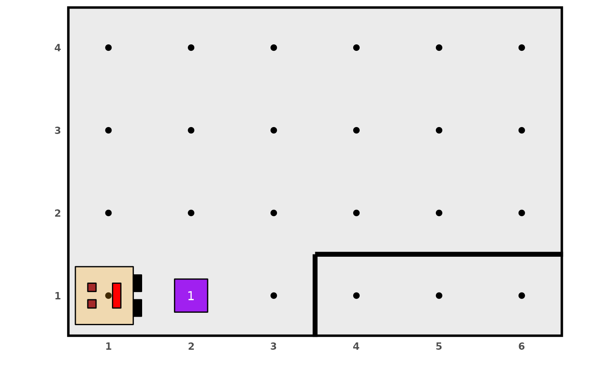

condiciones.RdEste conjunto de funciones devuelven un valor lógico TRUE o
FALSE según la evaluación que Karel puede hacer de su mundo.
frente_abierto() frente_cerrado() izquierda_abierto() izquierda_cerrado() derecha_abierto() derecha_cerrado() hay_cosos() no_hay_cosos() karel_tiene_cosos() karel_no_tiene_cosos() mira_al_este() mira_al_norte() mira_al_oeste() mira_al_sur()
Valor lógico TRUE o FALSE.
Las funciones frente_abierto(), frente_cerrado(),
izquierda_abierto(), izquierda_cerrado(),
derecha_abierto() y derecha_cerrado() analizan si hay paredes
al frente, a la izquierda o a la derecha de Karel. Las funciones
hay_cosos() y no_hay_cosos() analizan si hay cosos en
la posición actual de Karel. Las funciones karel_tiene_cosos() y
karel_no_tiene_cosos() analizan si Karel tiene cosos en su
mochila (no visibles en la representación gráfica). Las funciones
mira_al_este(), mira_al_oeste(), mira_al_norte() y
mira_al_sur() analizan la dirección hacia la cual Karel está
mirando.
generar_mundo("world_101")frente_abierto()#> [1] TRUEfrente_cerrado()#> [1] FALSEizquierda_abierto()#> [1] TRUEizquierda_cerrado()#> [1] FALSEderecha_abierto()#> [1] FALSEderecha_cerrado()#> [1] TRUEhay_cosos()#> [1] FALSEno_hay_cosos()#> [1] TRUEkarel_tiene_cosos()#> [1] TRUEkarel_no_tiene_cosos()#> [1] FALSEmira_al_este()#> [1] TRUEmira_al_oeste()#> [1] FALSEmira_al_norte()#> [1] FALSEmira_al_sur()#> [1] FALSE